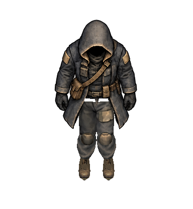

Recovered neutral

Native logical64 ×69.333
Half logical32 ×34.667
Prior flat baggy preference (reference only)

Native logical64 ×69.333
Half logical32 ×34.667
Anterior-shell geometry repair

NOT RECOMMENDED: knees visible, thigh patch/material still mismatched. PROPOSED, NOT ACCEPTED. Source-only, not native capture. Recovered hood/coat/equipment paint retained; real lower-body loft/skeleton parameters changed, no bitmap warp repair. Upper remains layered paint, not a finished rotatable model. No other facing until coordinator recommends south.
Preserved first repair | Review and limits
